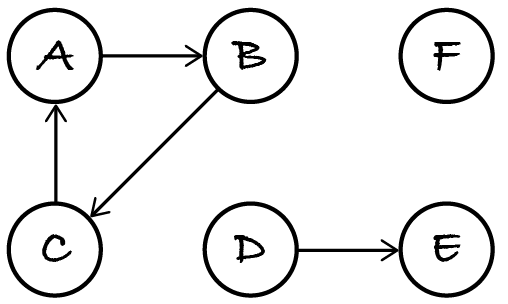
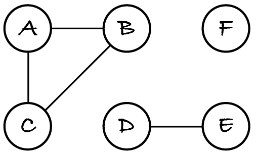
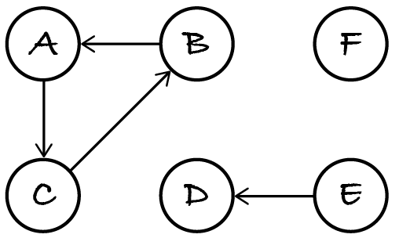

21.2. Directed graph components
Contrary to undirected graphs, digraphs have two kinds of components. Consider the following example.
If we ignore the edge directions then we get this undirected graph, with three connected components:
The weakly connected components of a digraph G are the connected components of the undirected version of G. So, the above digraph has three weakly connected components: nodes A, B, C and their three directed edges; nodes D and E and their edge; node F. Nodes of weakly connected components are mutually reachable if we ignore the edge directions.
By contrast, a strongly connected component is a largest subgraph where all nodes are mutually reachable when considering the edge directions. Nodes A, B and C are mutually reachable because their edges form a cycle. Each other node forms a strongly connected component by itself, because the other nodes can only reach themselves, via paths of length zero. To sum up, the above digraph has three weakly and four strongly connected components.
Just to check your understanding, how many weakly and strongly connected components does digraph A⟶B⟵C have?
It has one weakly connected component (the whole graph) and three strongly connected components (each node by itself).
21.2.1. Problem and instances
Before we turn to the problem of computing components in digraphs, here’s the digraph in Figure 21.2.1, for testing.
[1]:
%run -i ../m269_digraph
%run -i ../m269_queue
%run -i ../m269_stack
digraph = DiGraph()
for node in "ABCDEF":
digraph.add_node(node)
for edge in ("AB", "BC", "CA", "DE"):
digraph.add_edge(edge[0], edge[1])
I will compute the strongly connected components and leave the weakly connected components to you.
Exercise 21.2.1
Complete the following function.
[2]:
def weakly_connected_components(graph: DiGraph) -> dict:
"""Return the weakly connected components of graph.
Postconditions: the output maps each node to its component,
numbered from 1 onwards.
"""
pass
weakly_connected_components(digraph)
You should obtain three components: A, B and C; D and E; F.
21.2.2. Algorithm and complexity
The algorithm for the strongly connected components is similar to the algorithm for connected components in undirected graphs: for each node A that isn’t yet in the map, we find the nodes that are in the same component as A and add them to the map.
Node B is in the same component as A if there’s a path from A to B and a path from B to A. If we compute the set of all nodes that have paths from A and the set of all nodes that have paths to A, then the intersection of both sets is the set of nodes in the component of A, because those nodes have a path from and to A.
Traversal algorithms follow the directions of the edges and hence compute the paths from a given node A. One way to compute all paths to A is to reverse the direction of all edges to obtain the reverse graph, and then compute the paths from A in the reverse graph. As mentioned in Section 17.1, if a digraph represents the ‘follows’ relationship on Twitter, then its reverse graph represents the ‘is followed by’ relation. Here is the reverse graph of our example.
Info: The reverse graph is also called the transpose graph because it can be obtained by transposing the adjacency matrix.
If we traverse the original graph from A, we obtain the tree A⟶B⟶C and thereby the nodes that can be reached from A. If we traverse the reverse graph from A, we obtain the tree A⟶C⟶B, and thereby the nodes that can reach A in the original graph. Nodes A, B and C are in both trees, so they all can reach A and be reached from A, which means they form a strongly connected component.
As a further example, if we traverse the original graph from D, we obtain tree D⟶E. If we traverse the reverse graph from D, we obtain tree D (a single node). Both trees have only D in common, so it forms a strongly connected component by itself.
To sum up: for each node V that isn’t yet in the map, we find which nodes are reachable from V (using the input graph) and from which nodes we can reach V (using the reverse graph). The nodes in both sets are by definition in the same strongly connected component as V. Here’s the algorithm, using again a depth-first traversal, but any kind of traversal will do.
let reverse graph be the reverse of graph
let component be an empty map
let current be 1
for each node in graph:
if node not in component:
let forward be the nodes of DFS(node, graph)
let backward be the nodes of DFS(node, reverse graph)
for each common in forward intersected with backward:
let component(common) be current
let current be current + 1
Step 1 always has complexity Θ(n + e). In the worst case:
steps 4.1.1 to 4.1.4 are executed n times
steps 4.1.1 and 4.1.2 visit together the whole graph in Θ(n + e)
step 4.1.3 takes Θ(n) to compute the intersection of two node sets.
The total complexity is
by considering only the fastest growing part of the expression.
In the best case, the loop executes only once, adding all nodes to the map. (This means the best-case scenario is when the graph has only one strongly connected component.) Replacing the worst-case n iterations with a best-case single iteration in the previous formula, we get the best-case complexity:
21.2.3. Code and tests
Here’s the code for reversing a digraph and computing its strongly connected components.
[3]:
# this code is also in m269_digraph.py
def reverse(graph: DiGraph) -> DiGraph:
"""Return the same graph but with edge directions reversed."""
result = DiGraph()
for node in graph.nodes():
result.add_node(node)
for edge in graph.edges():
result.add_edge(edge[1], edge[0])
return result
def strongly_connected_components(graph: DiGraph) -> dict:
"""Return the strongly connected components of graph.
Postconditions: the output maps each node to its component,
numbered from 1 onwards.
"""
reverse_graph = reverse(graph)
component = dict()
counter = 1
for node in graph.nodes():
if node not in component:
forward = dfs(graph, node).nodes()
backward = dfs(reverse_graph, node).nodes()
for common in forward.intersection(backward):
component[common] = counter
counter = counter + 1
return component
Let’s test the code with the example digraph.
[4]:
strongly_connected_components(digraph)
[4]:
{'E': 1, 'D': 2, 'C': 3, 'B': 3, 'A': 3, 'F': 4}
As expected, nodes A, B, C are in one component and each other node is in its own component.